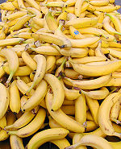

De: La Frikipedia, la enciclopedia extremadamente seria.
De: La Frikipedia, la enciclopedia extremadamente seria. De: La Frikipedia, la enciclopedia extremadamente seria.

|
FRIKIPEDIA QUIERE QUE ESTA DEFINICIÓN
PASE A SER UN ARTÍCULO FRIKIPÉDICO La información contenida en este artículo es una mínima parte de su jugo total, así que ponte los guantes, saca el tupperwere y empieza a exprimir el tema. Si lo haces serás recompensado con una galleta en almíbar y algo más. |
| De la serie Países del planeta tierra: | |||||
| | |||||
|---|---|---|---|---|---|
| |||||
| Lema: mmm, platano!! | |||||
| Himno: de canarias venimos
| |||||
| 
| |||||
| Capital | Bananolandia | ||||
| Mayor ciudad | Tomares | ||||
| Lenguas oficiales | Platanero. | ||||
| Gobierno | Republica bananera (no es evidente) | ||||
| Platano lider | Platan Bananovic | ||||
| Área | Francia Este, al otro lado de los Alpes | ||||
| Población | Dos o tres platanos, más o menos | ||||
| Moneda | Lero Bananero | ||||
| Zona horaria | GTM | ||||
| Dominio Internet | .banano | ||||
| Código telefónico | No tienen telefonos fijos, sólo platanos
| ||||
| País de los platanos, los platanos y los platanos | |||||
País africano en africa (quien no sepa esto deberia hacer el test), también es un sistema de gobierno ideal desarrollado en colaboración por Aspaña, Los latin kings esos Iberoamerica y EEUU.
La República Bananera es un modelo político imperfetamente compatible (gracias al empollon de la clase Inteligente) con el resto de formas de gobierno. Se basa en la corrupción generalizada de la clase apolítica cuya única obligacion es distraer a uno que pasa por ahi las gentes con furbo, certámenes de fealdadbelleza y prensa rosa (¿Marca?). La máxima figura del Estado está representada por el expresidiario que es elegido por aclamación de la peña betica sevillista colchonera madridista
Creado en el año no-se-cuantos, este pais tiene muchas exportaciones y tal reconocimiento es algo que le hizo subir posiciones en el rankin de mejores paises (Puesto 4,0038483854546) y ademas, el que escribio esta parida recibió una Patada Voladora ¬_¬
A pesar de las apariencias, Platan Bananovic conquisto la tierra, y planto cara al Pim Pam, una vulgar imitación de Aspaña, Platan asesino a miles de personas y sus ejercitos de platanos masacraron ciudades, aqui los trucos que uso Platan:
Después creyeron que era el fín del Mundo, por que había misiles rusos en Cuba apuntando a Bananolandia. Hubo suicidios, pero después de que terminara la broma de los Rusos todo volvío a la normalidad.
hubo una breve guerra contra la república bananera de frikilandia
Autor(es):